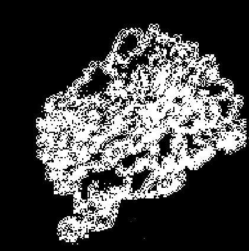

hello welcome
to nat's website
this is nat talking to you from beyond the web.
not much to see here but feel free to take a look around and have fun.
github
linkedin
twitter
vimeo
a blog post I wrote for storj about auditing in our distributed system